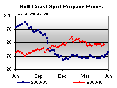

Released on May 19, 2010
(Next Release on May 26, 2010)
Deepwater Horizon Oil Spill
On April 20, 2010, an explosion and fire occurred on the offshore drilling rig Deepwater Horizon, which had been drilling an exploratory well in approximately 5,000 feet of water in the Gulf of Mexico, 52 miles southeast of Venice, Louisiana. The platform subsequently sank with 11 crewmembers presumed dead, and an uncompleted well leaking oil into the Gulf of Mexico.
While both public attention and current activities are now appropriately focused on efforts to contain the leak and to mitigate the resulting environmental damage, readers of this publication might also be wondering about potential effects on energy markets. The Gulf region is a very important energy center, with the offshore Gulf of Mexico providing about 30 percent of the total crude oil and 13 percent of the total natural gas produced in the United States. Gulf Coast refiners represent about half of total U.S. refining capacity, and are reliant on tanker shipments for a majority of their crude supply, and both tanker and barge shipments for moving significant volumes of petroleum products.
However, actual energy production and shipments have not been significantly impacted by the oil leak to date. Currently, only a fraction of 1 percent of offshore production has been shut in. EIA’s most recent Short-Term Energy Outlook, released on May 11, 2010, assumes no significant disruptions to energy supply resulting from the spill. Relatively high on-shore crude oil and product stocks, as well as the availability of the Strategic Petroleum Reserve, can be expected to buffer the impact of any short-term crude oil supply disruptions, should they occur.
Some energy impacts could yet be seen. Immediate concerns largely relate to the hazards presented by the oil slick. Where the oil is most concentrated, shipping, production, or drilling operations could be curtailed due to air quality (noxious fumes from the oil) or fire hazard. Ships transiting fouled water must be inspected to avoid further spread of the oil before entering the Mississippi or other inland waterways. Should any closures of shipping lanes or ports ultimately be required, shipping could have to be rerouted. The Coast Guard is monitoring this closely. EIA will continue to follow the spill and its impacts, and will post updates to the Gulf of Mexico Fact Sheet accessed from the EIA home page.
The actual and potential impacts of the Deepwater Horizon oil spill can be contrasted to those of a hurricane making landfall, a type of disaster that has affected the Gulf region on several occasions in recent years. Unlike the present oil spill, recent Gulf of Mexico hurricanes have often had a significant short-term impact on the energy industry.
Ahead of a storm, all oil and gas rigs in the potential hurricane path are typically shut down for safety reasons, and their personnel evacuated. Refineries and pipelines are also often shut down ahead of storms, as they can sustain damage both from strong winds and high water. Orderly precautionary shutdowns are desirable, since emergency closures can be damaging to equipment. Such shutdowns and restarts entail operational downtime directly caused by the impending storm, whether or not actual damage occurs.
After a storm passes, operators send assessment crews to inspect rigs, refineries, and other facilities, repair any damage, and commence restart procedures. Resumption of normal operations may be hampered by storm impacts on supporting infrastructure, such as electric power outages and damage to port facilities. For all of these reasons, hurricanes making landfall on the Gulf Coast often result in significant temporary supply interruptions and, sometimes, longer outages while damages are repaired.
U.S. Average Gasoline and Diesel Fuel Prices Drop
The U.S. average price for regular gasoline dipped to $2.86 per gallon, over four cents lower than last week but $0.56 above last year at this time. Prices fell in all regions of the country with the largest drop taking place in the Midwest and the smallest occurring in the Rocky Mountains. The East Coast average went down about four cents to $2.86 per gallon and the price in the Midwest fell nearly seven cents to $2.80 per gallon. The Gulf Coast price declined to $2.76 per gallon, a drop of nearly three cents. In the Rocky Mountains, the price went down over a penny to $2.90 per gallon. The average on the West Coast fell almost three cents to $3.07 per gallon as the California price fell two cents to $3.12 per gallon.
The national average price for diesel fuel dropped three cents to $3.09 per gallon, $0.86 higher than a year ago. Prices fell in all regions of the country; the largest drop took place on the Gulf Coast while the smallest change occurred in the Rocky Mountains. The price on the East Coast slipped three cents to $3.11 per gallon. The average in the Midwest fell three and a half cents to $3.07 per gallon. Dropping about a nickel, the average on the Gulf Coast fell to $3.04 per gallon. In the Rocky Mountains, the average dipped a penny to $3.16 per gallon. On the West Coast and in California, the averages dropped three cents to $3.20 per gallon and $3.24 per gallon, respectively.
Propane Inventories Post Modest Build
Total U.S. inventories of propane experienced a modest build of 0.6 million barrels last week to end at 39.5 million barrels in total. The Midwest region added 1.3 million barrels of inventory, while the East Coast region negated the rise with a decline of 1.3 million barrels of propane stocks. The Gulf Coast region added 0.6 million barrels and the Rocky Mountain/West Coast region was up slightly. Propylene non-fuel use inventories decreased their share of total propane/propylene stocks from 7.8 percent to 7.6 percent.
Text from the previous editions of “This Week In Petroleum” is accessible through a link at the top right-hand corner of this page.
| Retail Prices (Cents Per Gallon) | |||||||
| Retail Data | Changes From | Retail Data | Changes From | ||||
| 05/17/10 | Week | Year | 05/17/10 | Week | Year | ||
| Gasoline | 286.4 | Diesel Fuel | 309.4 | ||||
| Spot Prices (Cents Per Gallon*) | |||||||||||||||||||||||||||||||||||
|
 | ||||||||||||||||||||||||||||||||||
| *Note: Crude Oil WTI Price in Dollars per Barrel. | |||||||||||||||||||||||||||||||||||
| Stocks (Million Barrels) | |||||||
 |
|||||||
| Stocks Data | Changes From | Stocks Data | Changes From | ||||
| 05/14/10 | Week | Year | 05/14/10 | Week | Year | ||
| Crude Oil | 362.7 | Distillate | 152.8 | ||||
| Gasoline | 221.8 | Propane | 39.521 | ||||